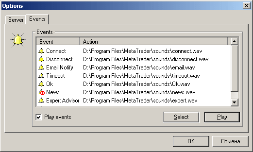

Настройки событий
Настройка событий
заключается в назначении каждому событию своего звука (звукового файла с
расширением WAV, либо другого файла, который может быть выполнен в
операционной системе). Для отключения звука (предотвращения выполнения
выбранных файлов) уберите галочку из поля "Использовать события" (Play events).

- Play events - включить/выключить
оповещения;
- Select - выбрать файл для оповещения;
- Play - проиграть звуковое
оповещение/запустить приложение-оповещение.
Назад Содержание Далее